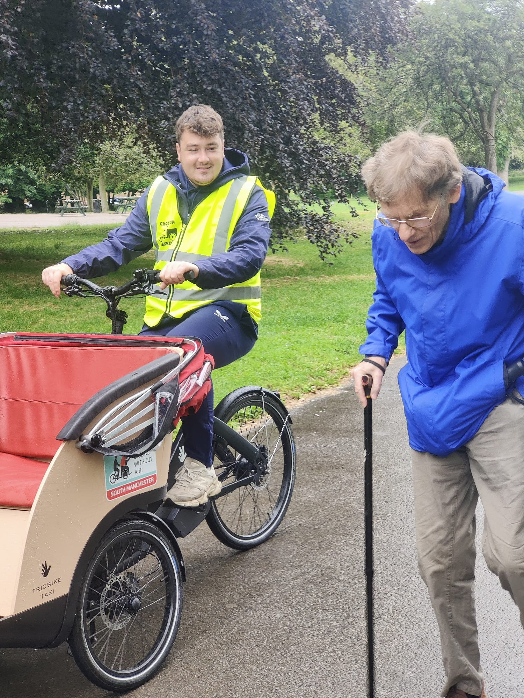

British Cycling Volunteer Day
- 🚴 We welcomed representatives from British Cycling to support our community work on their Volunteer Day on 3rd June.
- 🚴 Nicholas Wootton helped out on the Emmeline's ride from Aldi Didsbury.
- 🚴 Anthony Anderson learnt how to pilot a trishaw and helped out volunteer Shelia at Alexandra Park with Together Dementia.

Community Ride 2026 - Save the Date!
- 🚴 Please save the date - Sunday 6th September!
- 🚴 We have bid for funding from YNF (Your Neighbourhood Fund) after limited support from other funders, and we're preparing to get promotional materials out as soon as funding is approved.
- 🚴 Look out for updates on social media, a physical banner in Chorlton and posters at key locations across the area.
- 🚴 We're also hoping Luke Shepherd will produce another amazing film to capture the day, and we're asking TfGM about ride leader training for anyone who would like to help out.